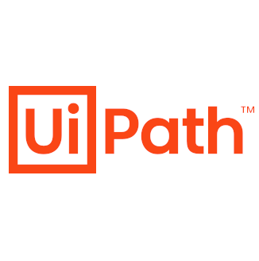

C言語
プログラミングの基礎を 独学+専門学校 にてC言語取得。
配列やポインタを扱うところまで学び、ゲーム作成を実施。
C言語プログラミング能力認定試験2級保有
VB系
独学でVBSにてBMI計算ツールを作成。
その後、専門学校でVBにて様々なゲームを作成。
就職後、VBAやVBSにて業務改善ツールを作成
Java
ゲームプログラミングを独学で勉強。
専門学校ではAndroidアプリ開発を学習。
また、Javaプログラミングを少人数に教える
Python
専門学校にてゲーム制作の過程で取得。業務の改善でツール作成。
seleniumによるブラウザ操作やGoogleスプレッドシートへの書き込み、FTPによるファイル取得が可能。
HTML / CSS
長期的に触ってきた技術。基本的な技術は所有しており、難しい技術も調べると実施できるレベル。
当サイトも基本HTMLとCSSを多様して作成している。
PHP
XAMPP環境にてゲーム開発を通じて学習。
Webサイト作成を学習してる際、MySQLと合わせてデータを扱う学習を行う。
また、webツール作成時、OAuth2で構成されたログインシステムを用いてSSO対応したツールを開発していた。
MySQL
専門学校にてXAMPP環境にてWebサイトの開発学習にて同時に学習。基礎的なコマンドやデータベースの扱いが可能。応用的な技術については学習する必要あり。
Javascript
初入社の試験にて使用。独学にて学習し、GeoJSONをAPIで取得し、MAPにポップアップで情報を出す試験を実施しクリア。
その後もWebサイトにデザインとして組み込んだり、DOM操作で動的にHTML要素を生成するなどを行う。
UIPATH

業務効率化を行うため独学で学習。どのように効率化するか、結果どのようになればよいかやリスクを洗い出し、上長にヒアリングしながら作成。
現在、開発したツールは自動起動するようになり、毎日稼働している。
クラウドで自在にどこでも世界中にネットワークやサーバーを構築できると知り独学で勉強を行う。実際にサーバー構築などを行いながら資格を取得。
人気ゲームのminecraftを通じてサーバー構築を同期社員に対して講座を開いた。
Cisco
社内研修を受けたのち、移動通信キャリアのネットワーク保守にて携わる。
基本的なコマンドや装置障害時はマニュアルを確認しながら保守業務に携われる。
Linux
学生の頃にPCにインストールして使用。移動通信キャリアのネットワーク保守にて保全業務を務める。
基本的な操作やマニュアル通りの作業を安全に行うことができ、簡易なwebサーバーは構築可能。
AWSやGCPにおいての操作経験やSSHでの操作なども経験あり。
Advanced TCA
移動通信キャリアのネットワークにて保守対応。
手順書を元に交換対象のブレードを交換可能。
内部OSはLinuxだったため、コマンド投入苦戦することなく取り組める。